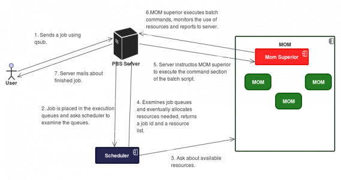

GNU/Linux y BaSH
#!/bin/bash
Duración: 40 Hours
Profesor: Gerardo Gutiérrez
Contacto: muzgash@gmail.com
Contenido
- Línea de Comandos
- Bash - Scripting
- “Parallel” BaSH
Línea de comandos
Para familiarizarnos un poco con el sistema en esta sección nos dedicaremos a realizar las tareas básicas necesarias para desarrollar el quehacer diario en cualquier sistema computacional, reconozcamos algunos comandos:
$ whoami
$ pwd
$ mkdir carpeta
$ cd carpeta
$ touch carpeta/archivo
$ ls -r carpeta/
$ asd
Todos estos comando básicos tiene documentación dentro del sistema, éste conjunto es llamado: los “manpages”, investiguemos el comando
$ man ls
Otros comandos de utilidad para la navegación y manipulación de ficheros son aquellos para borrar archivos, moverlos e ingresar a carpetas.
$ rm
$ mv
$ cd ~
$ cd -
$ cd /
En lso comandos anteriores usamos unos caracteres especiales llamados comodines:
- ~ Es la carpeta del usuario(home).
- - Es la ruta(pwd) en la que se encontraba anteriormente.
- / Es al directorio base.
La distribución de archivos y carpetas en sistemas linux es muy similar a través de las diferentes distribuciones. Aquí describo los más importantes: |/bin|Contiene los ejecutables del sistema base| |/etc|Contiene archivos de configuración| |/dev|Aquí el núcleo del SO busca los dispositivos conectados a la tarjeta madre| |/home|Es donde se guarda la información del usuarios| |/media|Contiene las carpetas donde las usb o cds van a ser ubicados(mountados)|
Para ver los contenidos de un archivo usamos comandos como cat, more o less. Exploremos algunos archivos
$ more /etc/passwd
$ less ~/.bashrc
$ cat /dev/random
Un comando puede ser: * Unprograma ejecutable en /usr/bin o incorporado en el sistema (como cd) * Un script de BaSH * Un alias
Las siguientes instrucciones darán información sobre comandos así como “man”:
$ type
$ which
$ apropos
$ info
$ whatis
Los comandos se pueden ejecutar en secuencia usando el separador “;”, ¿Qué hace el siguiente comando?
$ alias mkcd='mkdir prueba;cd prueba'
El comando alias puede renombrar un comando o un conjunto de ellos, en este caso vamos a nombrar como mkcd al conjunto de comandos (separados por ;) que crea una carpeta e ingresa a ella inmediatamente.
Podríamos decir que diariamente se comprimen y descomprimen archivos descargados a través de la red, esto por su facilidad para ser transferidos por ella. Linux viene por defecto con un solo método de compresión llamado “tarball”. Realicemos lo siguiente:
$ touch foo
$ touch bar
$ tar -cf foobar.tar foo bar
$ ls -l *
En este bloque creamos 2 archivos vacios que a continuación comprimimos con el comando tar(ver man), luego investigamos los archivos con el comando ls -l. ¿Por qué si los archivos vacíos pesan 0 bits, el comprimido pesa más?.
Variables de entorno y ambiente de trabajo
Linux pone a disposición del usuario información en una sesión de trabajo, información como donde se encuentran los comandos y los comandos mismos. Ésta la podemos categorizar en: Comandos y variables. Las variables se subdividen en varibales del shell(que veremos más adelante) y variables de entorno que investigamos así:
$ printenv
Se puede ver el contenido de la variable usando el comando echo:
$ echo $USER
He aquí algunas de las variables con su descripción: |HOME|La ruta al home del usuario| |USER|El usuario actual| |PWD|El directorio de trabajo actual| |TZ|La zona horaria| |LANG|El idioma| |PATH|Lista de rutas donde el sistema busca comandos|
Cuando iniciamos una sesión el programa BaSH comienza y lee archivos de configuración que definen el entorno, estos archivos se llaman archivos de arranque (startup files) y depende del sistema pueden ser:
- /etc/profile
- /etc/bash.bashrc
- ~/.bash_profile
- ~/.bash_login
- ~/.profile
- ~/.bashrc
Estos archivos pueden cambiar dependiendo del tipo de shell o de distribución de linux que estemos usando.
Para modificar el entorno basta con editar los archivos anteriormente mencionados para que realicen la tarea que queramos o si simplemente queremos cambiar una variable lo hacemos en 2 pasos: creando la variable y exportándola. Analicemos el ejemplo:
$ saludo="hola "
$ echo $saludo
hola
$ saludo=$saludo"mundo"
$echo $saludo
hola mundo
Aquí creamos la variable a través del caracter “=” y mostramos que se pueden concatenar. Hasta ahora no hemos exportado la variable, pero ella existe en el entorno de trabajo. ¿Qué pasa si abro una nueva sesión de BaSH(ejecute el comando bash) y busco la variable? Exportemos ahora la variable con el comando:
export $saludo
¿Qué pasa ahora si abro una ===nueva=== sesión de BaSH?
HOMEWORK *Agregue a su .bashrc un alias para conectarse al servidor de la sala cluster c3. *Discutamos la siguiente secuencia de comandos:
$ mkdir bin
$ echo "ls -a -l --color" > bin/ll
$ chmod u+x bin/ll
$ PATH=$PATH:$PWD/bin
$ export PATH
ANSWER
$ echo "alias ='ssh usuario@c3.itm.edu.co -X'" >> ~/.bashrc
La secuencia crea un directorio bin en $PWD.
Redirecciona el comando ls -al con color a un achivo nuevo dentro de esta carpeta.
Vuelve éste ejecutable solo para $USER
Redefine la variable de entorno $PATH al agregarle la carpeta $PWD/bin y exportandola.
Redirecciones y encomillado
En las secciones anteriores hemos usado un poco de redirecciones de una manera muy básica, pero esta es una de las herramientas más importantes de los sitemas Unix. Todos los comandos producen algún mensaje, ya sea de error o el resultado de la operación que realiza. Estos mensajes pasan a través de un flujo (stream) de datos llamado stderr(de standard error) y stdout (de standard output), el primero para el error y el segundo para el resultado del comando. Adicionalmente la información que es requerida por el comando se toma del flujo llamado stdin(de standard input).
Las redirecciones redefinen a donde van los flujos de salida (stdout y stderr) y de donde proviene el de entrada. Creemos un archivo con el contenido del home y su espacio en disco:
$ du -csh ~/* > home.log
$ cat home.log
Con el caracter «mayor que» estamos redirigiendo el stdout del comando du con sus opciones, al archivo home.log. Tratemos de hacer lo mismo pero con un mensaje de error:
$ asd
$ asd > error.log
$ cat error.log
El comando asd no existe pero el error salió en pantalla a diferencia del caso anterior donde dirigimos el flujo a un archivo. Veamos la instrucción
$ asd 2> error.log
$ cat error.log
El sistema tiene unos indicadores numéricos para estos flujos, como vimos en el ejemplo anterior el 2 corresponde a stderr, 1 y 0 a stdout y stdin respectivamente. Para redirigir ambos flujos de salida a un archivo podemos usar estos comandos:
$ cat /etc/sh* > ls-output 2>&1
$ cat /etc/sh* &> ls-output
Note que el orden de las redirecciones es importante. ¿Qué pasa si redireccionamos a /dev/null? ¿Qué utilidad podría tener esto?
Para llevar el stdout de un comando al stdin de otro podemos usar un operador llamado pipe, vemoslo en un ejemplo:
$ ls /home/ | wc -l
El comando wc cuenta los renglones del stdin, en este caso la salida del comando ls, es decir, cuenta el número de usuarios.
HOMEWORK Investiguemos los comandos: grep, sort, uniq, tee, tail y head. Descargue el [http://c3.itm.edu.co/bash/actividad2.tar.gz|archivo], descomprímalo y: * ¿Cuantos pacientes hay en el archivo patients.csv? * Usando solo una línea de comandos, haga una lista de todas las palabras diferentes que encuentra en el archivo words y cuéntelas. * Usando solo una línea de comandos, encuentre todas las ocurrencias de zzzz, cuéntelas y cree un archivo con todos los datos excepto estos. * En una sola línea de comandos, cree un archivo de 100 datos intermedios del archivo att.dat y muéstrelos en terminal.
ANSWERS
$ whatis {grep,sort,uniq,tail,head}
$ wget http://c3.itm.edu.co/bash/actividad2.tar.gz; tar -zxvf actividad2.tar.gz
$ grep -i gsp patients.csv | wc -l
$ sort words | uniq | wc -l
$ N=$(cat words|wc -l);grep -v zzzz words>wordz.txt;n=$(cat wordz.txt|wc -l);echo $(($N+$n))
$ N=$(cat att.dat|wc -l);head -n $(($N/2+50)) att.dat | tail -n 100 > 100data.txt
En varias ocasiones hemos usado el caracter ~ para denotar la ruta al home, hagamos:
$ ls ~/..
$ echo /*
Vemos que el caracter * en echo no imprime un « * » sino las carpetas ubicadas en /, como si fuera un ls. A esta forma de usar el * y ~ se les llama expansiones.
|Expanssion|Description|Example|
|—|—:|:—|
|$((expresion))|Evalua una expresión aritmética|$ echo $(( 2**8 ))|
|{a,b,c}|Crea una colleción de argumetos con a, b y c |$ mkdir folder_{a,b,c}|
|{1..5}|Crea una colleción de argumentos con los números del 1 al 5 |$ touch photo_{1..5}|
|{M..D}|También funciona con letras |$ echo {M..D}|
Algo que usaremos mucho en el capítulo de scripts es el encomillado. Los caracteres especiales que hemos usado en algunas ocasiones no dan los resultados esperado, por ejemplo:
$ mkdir nombre espaciado
$ echo hola mundo
$ echo El PIB per capita es US$7.7
Para evitar estos errores usaremos comillas dobles, con éstas cualquier caracter especial que esté dentro de ellas perderá su significado, y será tratado con un caracter común.
$ mkdir "nombre espaciado"
$ ls -l "nombre espaciado"
$ echo "hola mundo"
Excepciones a esta regla son «$»,«\»(backslash) y «`»(comilla invertida o acento grave).
$ echo "El PIB per capita es US$$((3+4)).$((2*3))"
$ echo "2 y 2 son $((2+2)), 4 y 2 son $((4+2))"
Si necesitamos retirar todas las influencias de los caracteres especiales usamos comillas simples:
$ echo 'El PIB per capita es US$$((3+4)).$((2*3))'
$ echo '2 y 2 son $((2+2)), 4 y 2 son $((4+2))'
Sin embargo a veces necesitamos que solo uno de los caracteres especiales no sea interpretado como tal, para esto usamos «\»(backslash) llamado el caracter de escape:
$ echo "El PIB per capita es US\$$((3+4)).$((2*3))"
Expresiones Regulares
Las expresiones regulares son un conjunto de caracteres que determinan un patrón. Estos caracteres servirán para encontrar líneas de texto específicas con un patrón particular. Las expresiones regulares se componen de 3 tipos de metacaracteres: * Anchors: Especifican la posición del patrón en relación a una línea de texto. * Conjunto de caracteres: Especifican uno o más caracteres en una sola posición. * Modificadores: Especifican cuantas veces el caracter anterior será repetido.
Las anclas ^ y $ significan el principio y el final de una línea, es decir ^asd buscará todas las líneas que comiencen con asd y asd$ buscará todas las líneas que terminen con asd, veamos un ejemplo:
$ ls /usr/bin/ | grep '^zip'
$ ls /usr/bin/ | grep 'zip$'
Un solo caracter cualquiera es reemplazado por ., un conjunto de caracteres es determinado entre corchetes:
$ grep -i '^[ae][ou]$' /usr/share/dict/spanish
$ grep -i '^[a-w]...t$' /usr/share/dict/spanish
Estos últimos tienen sus excepciones
|Expresión regular|reemplaza|
|—|:—:|
|[]}|Los caracteres [ y ]|
|[1]| El caracter 1|
|[^0-9]| Cualquier caracter excepto un número|
|[a-z]]| Cualquier letra seguida de ]|
|[]0-9]| Cualquier número o ]|
Observamos que ^ dentro de los corchetes niega la expresión regular. Elcaracter ** * ** reemplaza cualquiér número(0 o más) de ocurrencias del caracter que le precede.
Para encontrar un número de veces la expresión en la línea usamos los caracteres { y }, por ejemplo '^A\{4,\}' encuentra la línea con 4 o más aes.
Encontramos una palabra completa insertándola entre < y >.
Las expresiones regulares se pueden recordar marcando la expresion entre ( y ) e invocarlo nuevamente con \ seguido de un solo dígito. Se pueden recordar hasta 9 patrones diferentes. Por ejemplo la siguiente expresión regular encuentra palíndromos de 5 letras como «radar»:
\([a-z]\)\([a-z]\)[a-z]\2\1
HOMEWORK Decargue el [http://c3.itm.edu.co/bash/nombres.txt|archivo] retírele las líneas repetidas si exiten y realice: * Busque los nombres que contengan «ana». * Busque nombres que contengan ab en un lugar diferente del principio o del final. * Busque palíndromos de 4 y 5 letras en el diccionario /usr/share/dict/spanish * Busque los nombres que tengan tíldes. * Busque nombres de menos de 4 letras que tengan diptongos. * Busque los nombres que tengan alguna letra doble i.e. Vanessa. * ¿Qué problemas podría presentar la expresión A.*B?
Existen otro tipo de expresiones regulares que no requieren que los caracteres ( ) y { } sean designados como \(\) y \{\}. A éstas se les llama expresiones regulares extendidas, pero no todos los lenguajes o programas las soportan.
En las expresiones regulares extendidas el caracter ? reemplaza cero o más caracteres que le preceden y el caracter + reemplaza uno o más.
La expresión entre los caracteres ( | ) reemplaza una escogencia de patrones, veamos mejor su uso con un par de ejemplos:
$ grep '^(From|Subject): ' /var/spool/mail/$USER
$ grep -E '^(From|Subject): ' /var/spool/mail/$USER
$ echo "expresion regular" | egrep 'expresion[es]?( regular| irregular)?[es]?'
En esta tabla podrá consultar si la expresión se puede usar en la versión extendida o en la básica así como su función: |Expresión|clase|función| |—|—:|:—| |.|Todas|Un solo caracter.| |^|Todas|Principio de la línea.| |$|Todas|Final de la línea.| |[]|Todas|Conjunto de caracteres.| |*|Todas|Cero o más duplicados.| |<|Básico|Principio de la palabra.| |>|Básico|Final de la palabra.| |(..)|Básico|Recuerda un patrón.| |\1..\9|Básico|invoca el patron recordado.| |+|Extendido|Uno o más duplicados.| |?|Extendido|Cero o más duplicados.| |{M,N}|Extendido|M a N duplicados.| |()|Extendido|Una u otra expresión.|
EJERCICIOS * Encuentre en el diccionario la palabras que tengan 2 o más consonantes consecutivas. * Descargue el archivo [http://c3.itm.edu.co/bash/carros_perdidos.csv|carros_perdidos.csv] * Reporte las placas delos carros perdidos en Medellín y Bogotá en los años 2007, 2009 y 2011. * Encuentre las ocurrencias de una palca inválida. * Separe en diferentes archivos los carros por día de pico y placa. * Separe en diferentes archivos los carros por marca.
SED
sed (Short EDitor) es un simple editor de flujos de texto que funciona por línea de comandos de la siguiente manera:
$ echo "foo" | sed s/foo/bar
$ cat nombres.txt | sed s/ana/anita/
$ grep 'anita' nombres.txt
Gracias a la opción s, sed sustituye las ocurrencias de foo(ana) por bar(anita) haciendo una copia del flujo en stdout. Creemos un archivo y cambiamos hola por HOLA
$ cat > file.txt
hola mundo, hola
pirinhola hola
HoLa hola
$ cat file.txt | sed 's/hola/HOLA/'
Podemos observar que nada más las primeras ocurrencias de la palabra hola fueron cambiadas, el comando es sensible a las mayúsculas y es estricto con la ocurrencia, es decir, si la palabra existe en medio de otra, la cambia. La inclusión de comillas es necesaria cuando se usan caracteres especiales, pero es buena práctica utilizarlas siempre. Es de notar que para encontrar un patrón a ser reemplazado por sed también se pueden usar expresiones regulares.
HOMEWORK * Discutamos las siguientes líneas:
$ cat file.txt | sed '2s/hola/HOLA/'
$ cat file.txt | sed 's/hola/HOLA/I'
$ cat file.txt | sed 's/hola/HOLA/g'
$ cat file.txt | sed 's/,/\n/g'
$ echo abcd123 | sed 's/\([a-z]*\).*/\1/'
- Elimine la parte que va luego de la e del siguiente comando, incluyendo la e
$ echo 1.4518e+25 - Elimine los números de
$ echo abc10002def - Elimine la primera columna y la primera fila del archivo patients.cvs y cambie los separadores «, » por espacios tabulados(\t).
- Elimine las líneas que contengan números negativos del archivo att.dat
- Cambie las ocurrencias de nombres con letras repetidas por una sola letra en el archivo nombres.txt.
ANSWERS
Solo aplica la sustitución en la segunda línea.
La I ignora si es mayúscula o minúscula.
La g cambia todas las ocurrencias en todas las líneas.
Cambia cada , por un salto de línea.
Quita las letras.
$ echo 1.4518e+25 | sed 's@e.*@@'
$ echo abc10002def | sed 's@[0-9]*@@g'
$ sed -e '1d' -e 's@gsp[0-9]\{1,3\},@@gI' -e 's@,@\t@g' patients.csv
$ sed '/-/d'
$ wc -l nombres.txt; sed 's@\([a-z]\)\1@\1@g' nombres.txt | sort | uniq | wc -l
Podemos realizar un script en sed que haga varias operaciones en secuencia sobre un archivo. Creemos el archivo patients.sed con las siguientes instrucciones
1d
s@gsp[0-9]\{1,3\},@@gI
s/,/\t/g
Corremos este script con la instrucción
$ sed -f patients.sed patients.csv
Vemos que resuelve uno de los ejercicios al quitar la primera línea, la primera columna y cambiar las comas por un espacio tabulado. Podemos también correr el script si invocamons en él el comando de la siguiente manera(10att.sed):
#!/bin/sed -f
1,10s@\(.*\) \(.*\) \(.*\)@\1\t\2@pw att1-2.dat
Cambiamos los permisos de ejecución del script y luego lo ejecutamos
$ chmod u+x 10att.sed
$ ./10att.sed -n att.dat
Este ejemplo usamos la opción -n para que no muestre en pantalla, la opción p para que imprima solamente lo modificado y w para que guarde en el archivo1-2.dat. Ejecute el ejemplo y identifique la expresión regular y la instrucción inicial (1,10s@).
Ejercicios * Cree scripts que a partir de un archivo con más de 3 columnas se obtengan 3 archivos: * Con las columnas 3 y 2, en ese orden, separadas por un espacio tabulado. * Con los números negativos de las columnas 2 y 3, eliminando la fila entera si lo encuentra. * Con los 100 primeros datos de las columnas 3, 1 y 2 separados por ;.
AWK
AWK es un lenguaje de programación diseñado principalmente para la búsqueda y el procesamiento de texto. Como todos los lenguajes de programación tiene variables e instrucciones de control del flujo, como condicionales y bucles, AWK procesa cada línea de un archivo buscando patrones y realiza allí las acciones. Su sintaxis es:
$ awk '/patrón1/ {acciones}; /patrón2/ {acciones}' archivo
Los patrones son expresiones regulares y recordemos que las comillas simples son para evitar que el shell no interprete los caracteres especiales. Descarguemos el archivo [http://c3.itm.edu.co/bash/people.txt|people.txt] y realicemos los siguientes ejemplos:
$ awk '{print;}' people.txt
$ awk '/Sagan/' people.txt
$ awk '/Sagan/;/Asimov/' people.txt
Vemos que la acción «print» muestra(imrpime) todo el archivo y el patrón «Sagan» muestra solamente las líneas que contienen duicho patrón. Podemos también incluir varias operaciones para cada patrón:
$ awk -F'[&,;-]' '/Sagan/{print $2 $1};/Asimov/{print $2 $1}' people.txt
La opción -F nos permite indicarle a awk cuales son los caracteres que nos delimitarán los campos que son llamados por las variables $1 y $2 en este caso. El comando print también puede mostrar caracteres para construir expresiones como
$ awk -F'[&,;-]' '/Sagan/{print $2" " $1" fue un gran "$3" y "$4};/Asimov/{print "Además de "$3 ", "$2" " $1 " era también"$4}' people.txt
$ awk -F'[&,;-]' '/Sagan/{printf "%s %s fue un gran %s y %s \n",$2,$1,$3,$4};/Asimov/{printf "Además de %s, %s %s era también %s\n",$3,$2,$1,$4}' people.txt
El comando printf a diferencia de print nos permite de manera más cómoda darle formato a la expresión a mostrar, en este caso usamos %s para imprimir cadenas de caracteres(strings), %d nos permitirá imprimir enteros y %f reales. Vemos tambień que una instrucción con awk puede volverse tan compleja como ilegible, por ejemplo:
$ awk -F'[;,-]' '{printf "%s %s (%s)",$2,$1,$3;if(NF > 6){age=$7-$4;printf" murió en %d, a los %d años\n",$7,age}else{printf" aún vive\n"}}' people.txt
Por claridad y comodidad construimos un script llamado people.awk:
BEGIN{FS="[;,-]"} {
$2 = substr($2,2) #Quita el espacio en blanco del nombre
printf "%s %s (%s) ", $2, $1, $3
if( NF < 6 ) {
edad = $7 -$4
printf "Murió en %d, a los %d años", $7, edad
}
else {
printf "Nació en %d y aún vive", $4
}
}
En este script vemos que la opción -F se convierte en una acción de la instrucción BEGIN -FS significa Field Separator. Entre las llaves después de BEGIN van instrucciones que se ejecutarán antes de que awk comience a procesar el archivo de entrada; allí podemos inicializar variables, los separadores de campo, imprimir mensajes de inicio, etc. substr toma un substring, i.e. una cadena de caracteres más corta tomada desde el segundo caracter de la variable 2. La condición del if se cumple si el número de campos(NF) es mayor a 6, es decir, si la persona tiene fecha de muerte; calculamos la edad a la que murió tomando la diferencia. Si no ha muerto imrpimimos un mensaje diferente.
También podemos hacer ciclos en awk.
BEGIN{
a=1
b=1
while(++x<=10){
print a
t=a
a=a+b
b=t
}
exit
}
También podemos definir funciones en awk:
BEGIN{}
function mod(a,b)
{
return (a>=0) ? a%b : a%b+b
}
{
a=mod($1,$2)
}
END{print a}
La función mod returna a%b si a es positivo y a%b+b de otro modo. Esto permite definir correctamente la operación módulo para incluir números negativos.
HOMEWORK *Descargue el archivo [http://c3.itm.edu.co/bash/equipos.txt|equipos.txt] y escriba un script de awk que: **Calcule el promedio para cada persona **Calcle el promedio por cada examen **Calcule el promedio por cada equipo Debe obtener un resultado como el siguiente
Nombre Promedio
------ --------
Astrid 14.67
Ana María 13.00
Luisa 15.00
Camilo 13.33
Jairo 19.50
Rubén 15.67
Andrés 13.00
Luis 15.00
------------------
Promedio del examen 1 : 5.00
promedio del examen 2 : 15.75
promedio del examen 3 : 22.12
-------------------
Promedio del equpo rojo: 16.12
promedio del equipo verde: 14.44
Promedio del equipo azul: 13.17
- Haga una función recursiva que invierta las palabras de un texto dado.
- Decargue el archivo [http.//c3.itm.edu.co/bash/distancias.dat|distancias.dat] el cual es una lista de coordenadas 2D. Calcule la distancia entre las 2 posiciones en cada línea.
- En una sola línea del comando awk, encuentre el máximo de cada columna del archivo att.dat.
ANSWERS
$ cat rev.awk
BEGIN{}
function rev(str, start)
{
#note que no se necesitan los corchetes, también co una indentación es suficiente
if (start == 0)
return ""
#Retorna una cadena de caracteres con el último caracter seguida de una nueva
#instancia de la función
return (substr(str, start, 1) rev(str, start - 1))
}
{
print rev($0,length($0))
}
$ echo "dabale arroz a la zorra el abad" | awk -f rev.awk
$ sed 's/e[+-].\{1,2\}//g' distancias.dat | awk '{print sqrt(($4-$2)^2+($3-$1)^2)}'
$awk 'BEGIN{a=-1000;b=-1000;c=-1000}{if($1>a) a=$1;if($2>b) b=$2;if($3>c) c=$3} END{printf "max of each colum %f %f %f\n",a,b,c}' att.dat
Este último queda mejor en un archivo, max.awk:
$cat max.awk
BEGIN{
a=-1000
b=-1000
c=-1000
}
{
if($1>a) a=$1
if($2>b) b=$2
if($3>c) c=$3
}
END{printf "max of each colum %f %f %f\n",a,b,c}
$ awk -f max.awk att.dat
BaSH scripting
Scripting
Un script es un archivo que contiene una serie de comandos a ser ejecutados por el shell. Éste puede interpretar dicho archivo así como cada entrada en la línea de comandos. Para crear un script abrimos un editor de texto (nano,pico,vim,emacs,gedit,kate) y en él podemos escribir cualesquier comandos vistos hasta el momento que serán ejecutados en el orde de aparición en el archivo. Veamos un ejemplo:
$ cat script.bash
mkdir prueba
touch prueba/testfile
ls
rm prueba/ 2> rm.log
cat rm.log
$ bash script
Creamos el archivo script. Al finalizar podemos ejecutar el script invocando al shell, en este caso bash.
Existen otro tipo de programas(lenguajes o interpretes) de scripting como python o R, así como otros shells coo ksh, csh, zsh o sh, cada uno de ellos con características diferentes. sh fue por muchos años el que venía por defecto con la instalación de linux pero éste ahora instala BaSH que es uan versión mejorada, probemos el siguiente comando:
$ echo "whatis {sed, awk, bc}" | sh
$ echo "whatis {sed, awk, bc}" | bash
Notemos que sh no entiende las extensiónes que vimos en sesiones anteriores mientras qeu bash sí. los archivos de scripting se suelen nombrar con la extensión del programa que los debe ejecutar, es decir, tomaremos la costumbre de nombrar los archivos que correran con bash, script.bash, los de sed, script.sed y los de awk, script.awk.
Podemos hacer estos scripts ejecutables agregando al principio del archivo una línea que le indica al sistema cuál es el programa que va a interpretar dicho script:
#!/ruta/al/interprete
Este caso el interprete será bash, o bien puede ser awk, python, etc. A continuación dedemos cambiar los permisos del archivo pues por defecto no tiene la posibilidad de ejecutarse, recordemos:
$ chmod +x script.bash
Para ejecutarlos damos la ruta completa al script, recordemos las opciones:
$ /home/usuario/carpeta/script.bash
$ ./script.bash
$ $PWD/script.bash
HOMEWORK * Haga que los archivos .awk sen ejecutables. * Cree un script que liste los usuarios y su carpeta de home tomando los datos del archivo /etc/passwd * Haga que los archivos .sed sean ejecutables.
Recordemos la asignación y el uso de las variables con el siguiente ejemplo, creamos un archivo con el nombre variables.bash
var1=a var2=b
string1="dos palabras"
string2="$string1 y otras 2"
comando=$(seq 1 2 20)
operacion=$((7%5))
echo $var1 $var2
echo $string1
echo $string2
echo $comando
echo $operacion
En el ejemplo podemos notar que se pueden hacer varias asignaciones en la misma línea, las cadenas de caracteres con espacios se deben indicar con comillas y podemos usar el valor de una variable para crear otra.
Realicemos los siguientes comandos:
$ file="texto"
$ touch $file
$ ls
$ mv $file $file1
No es posible renombrar el archivo “texto” a “texto1” pues la variable file1 no existe:
$ mv $file ${file}1
BaSH así como AWK también tiene funciones, es decir, fragmentod de código con nombre que se pueden invocar posteriormente. Su sintaxis es igual:
#!/bin/bash
function wait {
echo "waiting..."
sleep 2
}
echo "La terminal entra en modo de espera"
wait
echo "Bienvenido nuevamente"
Las funciones en BaSH también pueden tener argumentos y “retornar” valores:
#!/bin/bash
function suma() {
resultado=$(($1+$2))
}
suma 3 2
echo "la suma entre 3 y 2 es" $resultado
Vemos que la variable resultado definida en la función es una variable global, es decir, podemos acceder a ella desde cualquier parte del script. Podemos también definir variables locales, esto es, que solo existen dentro de la función:
#! /bin/bash
var=0
function func1 {
local var
var=1
echo "la variable var en func1 es: $var"
}
function func2 {
local var
echo "la variable en func 2: $var"
}
echo "var es: $var"
func1
func2
echo "var sigue siendo $var"
Observamos que la variable var a pesar de ser redefinida con el mismo nombre en cada función, esta redefinición solo tiene efecto dentro de la susodicha. Podemos también pedirle al usuario que ingrese datos por stdin:
#!/usr/bin/env bash
echo "Ingrese su nombre"
read input
echo "Bienvenido $input"
HOMEWORK * Discuta la siguiente línea
$ a=asd;b=1;a+=$b
*Imprima la variable $0 en un script de BaSH *Cree un script que imprima $1 y $2 y ejecute
$ ./script.bash hola mundo
- Cree una función que duerma la cantidad de segundos dada como argumento.
- Modifique el script anterior para que el tiempo sea ingresado como argumento por línea de comandos.
- Cree un script que pida el usuario y revise si se encuentra en el sistema, dado el caso que reporte la ruta al home, cuantos carpetas tiene y cuantos archivos.
- El comando ps aux entrega varias columnas: usuario pid %cpu %mem vsz rss tty stat start time command. Cree un script que dado un usuario imprima: las tareas que está corriendo(solo el nombre, no al ruta completa); el PID; el uso de procesador y memoria; y el tiempo que lleva corriendo, solo si cumple las condiciones:
- Memoria usada != 0.0
- %CPU usada != 0.0
ANSWERS
* La secuencia de comandos a=asd;b=1;a+=$b toma los valores de las variables como cadens de caracteres y los concatena.
* Imprime el nombre del script.
* Imprime “Hola Mundo” pues $1 y $2 son el primer y segundo argumento del script respectivamente.
* Una reescritura del comando sleep con algunos mensajes wait.bash
#!/bin/bash
function wait() {
echo "Esperando..."
sleep $1
}
echo "La Terminal entra en modo de espera"
wait 3
echo "Bienvenido Nuevamente"
- Como $1 es el primer argumento del script así como de la función, reescribimos:
#!/bin/bash
function wait() {
echo "Esperando..."
sleep $1
}
echo "La Terminal entra en modo de espera"
wait $1
echo "Bienvenido Nuevamente"
- El script debe ser algo similar a este:
#!/bin/bash
folders=$(ls -lr /home/$1 | grep -c '^d')
files=$(ls -lr /home/$1 | grep -v -c '^d')
echo "El usuario $1 tiene $folders carpetas y $files archivos."
Condicionales y bucles
Así como en awk y en todos los lenguajes, deben existir herramientas de control de flujo: condicionales y bucles. Los bucles nos permiten realizar un conjunto de tareas varias veces, veamos un ejemplo básico:
#!/bin/bash
contador=0
for i in $(ls)
do
contador=$((contador+1))
echo $i
done
echo "En total hay $contador archivos"
Este script cuenta los archivos en $PWD luego de listarlos. La variable i toma uno por uno los valores del comando ls en este caso, que son impresos con echo. Notemos que el contador es una operación aritmética que tiene una sintaxis particular, las variables pueden ir sin el caracter de moneda. La instrucción que se repetirá a través del for debe ir entre las palabras claves, do y done, al igual que en el caso del bucle while.
#!/bin/bash
x=1
while [ $x -le 5 ]
do
echo "$x todavia es menor que 5"
x=$(( $x + 1 ))
done
While realiza las operaciones internas mientras la condición sea válida. El comando until es similar pero se detiene cuando la condición lógica se cumple:
#!/bin/bash
x=1
until [ $x -ge 5 ]
do
echo "$x todavia es menor que 5"
x=$(( $x + 1 ))
done
HOMEWORK
* Cree un script que duerma un segundo e imprima un punto por cada archivo en $PWD y finalmente imprima el espacio en disco que ocupa la suma de los archivos.
* Modifique el script anterior para que la ruta sea entrada como argumento por línea de comandos.
Otro mencanismo de control de flujo es condicional if, su sintaxis es:
if comando
then
comando
else
otro comando
fi
Como if evalua una condición, no es de mucho sentido que su argumento sea un comando. Los comandos siempre devuelven un estado (exit status) verdadero si el comando se realizó con éxito y falso de otro modo, vemos un ejemplo:
$ ls asd; echo $?
$ ls ~; echo $?
$ false; echo $?
$ true; echo $?
$ [ 4 = 1 ] ; echo $?
$ [ 1 = 1 ] ; echo $?
Vemos que un comando realizado exitosamente nos retorna un 0 (que podemos ver en la variable $?) y un valor de retorno diferente a 0 significa que el comando tuvo un error. Vemos allí también la forma de evaluar expresiones lógicas y el significado de los comandos true y false. Consideremos el script:
#!/bin/bash
FILE = $1
if [ -e "$FILE" ]; then
if [ -f "$FILE" ]; then
echo "$FILE es un archivo regular"
fi
if [ -d "$FILE" ]; then
echo "$FILE es un directorio."
fi
if [ -r "$FILE" ]; then
echo "$FILE es legible."
fi
if [ -w "$FILE" ]; then
echo "$FILE es escribible."
fi
if [ -x "$FILE" ]; then
echo "$FILE es ejecutable o navegable."
fi
else
echo "$FILE does not exist"
exit 1
fi
exit
Podemos evaluar el status de archivos, las expresiones se encuentran en la siguiente tabla:
| Expresión | Verdadera si |
|---|---|
| file1 -nt file2 | file1 es más nuevo que file2 |
| file1 -ot file2 | file1 es más nuevo que file2 |
| -b file | file existe y es un dispositivo |
| -d file | file existe y es un directorio |
| -e file | file existe |
| -f file | file existe y es un archivo regular |
| -L file | file existe y es un link simbólico |
| -O file | file existe y el usuario es su dueño |
| -r file | file existe y es legible |
| -r file | file existe y tiene un tamaño maor a cero |
| -w file | file existe y es escribible |
| -x file | file existe y es ejecutable |
También podemos hacer comparaciones de cadenas de caracteres y enteros:
| Expresión | Verdadera si |
|---|---|
| string | No es null |
| -n string | La longitud es diferente de cero |
| -z string | La longitud es igual a cero |
| string1 == string 2 | Son iguales |
| string1 != string2 | Son diferentes |
| string1 > string2 | string1 organiza primero que string2 |
| string2 < string2 | string2 organiza primero que string1 |
| int1 -eq int2 | Iguales |
| int1 -ne int2 | Diferentes |
| int1 -le int2 | int1 menor o igual a int2 |
| int1 -lt int2 | int1 menor que int2 |
| int1 -ge int2 | int1 mayor o igual a int2 |
| int1 -gt int2 | int1 mayor que int2 |
una versión actual de bash permite el uso de dobles corchetes en vez de simples para hacer una operación lógica, estos adicionalmente permiten la comparación de una cádena de caracteres con una expresión regular a través del operador =~.
El siguiente código revisa si el dato entrado es un número entre otras cosas:
#!/bin/bash
if[[ "$1" =~ ^-?[0-9]+$ ]]
then
echo Ha ingresado un número"
else
echo "Por favor ingrese un número" >&2
exit 1
fi
También podemos usar dobles paréntesis para evaluar operaciones lógicas con números de una manera más sencilla que con las expresiones necesarias en los corchetes.
$ num=12;if((num>=10));then echo "mayor que 10";fi
Si queremos crear expresiones lógica más complejas podemos usar las compuertas AND, OR y NOT que tienen una representación diferente si usamos los corchetes simples o dobles.
| Compuerta | [] | [[]] o (()) |
|---|---|---|
| AND | -a | && |
| OR | -o | ` |
| NOT | ! | ! |
El siguiente script mira si el número está entre 1 y 10:
#!/bin/bash
if [[ $1 -ge 1 && $1 -le 10 ]]
then
echo "el número se encuentra entre 1 y 10"
else
echo "Ingrese un número válido" >&2
exit 1
fi
HOMEWORK
- Cree un script que cuente 10 segundo mientras ud se cuenta las pulsaciones, que luego pida ingresar ese número y calcule los ppm(pulsaciones por minuto).
- Edite la solución al ejercicio de los usuarios de la sesión anterior para que realice manejo de error.
- Con la variable de entorno RANDOM cree un script que genere un archivo de datos con 3 columnas de estos números que no sobre pase un tamaño (espacio en disco) dado por el usuario.
- Con un script reporte las carpetas del home(o de otra carpeta) que sobrepasen en espacio un umbral dado por línea de comandos sugiriendo borrarlas, si el usuario así lo desea, bórrelas.
- Genere un mensaje de uso (-h) para los scripts anteriores.
ANSWERS
- Lo puede realizar sencillamente en una sola línea de comandos:
$ sleep 10;echo "ingrese conteo";read conteo;echo $((conteo*6))
O bien en un script para que de mejor información:
echo presione "Enter para iniciar conteo"
read intro
for i in $(seq 1 1 10)
do
sleep 1
echo $i
done
echo "Ingrese conteo"
read conteo
echo "Sus pulsaciones por minuto son: $((conteo*6))"
- El ejercicio pide dar un reporte de la cantidad de los archivos y las carpetas en el home del usuario, para asegurar que el usuario sea válido basta con agregar una condición:
#!/bin/bash
if [ -d /home/$1 ]
then
folders=$(ls -lr /home/$1 | grep -c '^d')
files=$(ls -lr /home/$1 | grep -v -c '^d')
echo "El usuario $1 tiene $folders carpetas y $files archivos."
else
echo "El usuario no existe."
fi
- Primero miramos si el archivo existe y lo borramos para no hacerlo más grande, luego hacemos un blucle que termina cuando el tamaño del archivo “size” es mayor que el tamaño entrado por el usuario a través de línea de comandos.
#!/bin/bash
max_size=$1
size=0
if [ -e 3Drandom.dat ]
then
rm -rf 3Drandom.dat
fi
while (( $size <= $max_size ))
do
echo $RANDOM $RANDOM $RANDOM >> 3Drandom.dat
size=$(ls -l 3Drandom.dat | awk '{print $5}')
echo $size $max_size
done
Manejo de Archivos
Sabemos que a través de una redirección podemos escribir en archivos, pero frecuentemente necesitamos también leer datos de estos. Podríamos usar scripts en awk pero no siempre es tan ventajoso. Veamos unos ejemplos de como hacerlo en bash leyendo el archivo lineas.tx:
Lectura con cat
#!/bin/bash
FILE=lineas.txt
conteo=1
cat $FILE | while read line; do
echo "Línea # $conteo: $line"
((conteo++))
done
echo "El número total de líneas en $FILE es $conteo"
¿Qué problemas presenta esta forma de leer?
El siguiente código es el más intuitivo pero también la peor forma de leer un archivo:
FILE=lineas.txt
for line in $(cat $FILE);do
echo $fileline
done
La forma correcta de leer un archivo es:
conteo=1
FILE=lineas.txt
while read line;do
echo "Linea # $conteo: $line"
((conteo++))
done < $FILE
echo "El número total de líneas en $FILE es $conteo"
HOMEWORK
- Descargue los archivos participantes.lst y certificado.svg. Identifique el archivo svg y genere un certificado en este formato para cada participante en un archivo diferente.
bc
Ya que bash solo procesa enteros, para realizar tareas numéricas encesitamos de una herramienta diferente que nos permita la utilización de reales. bc es un lenguaje de programación que soporta precisión arbitraria y nos permite realizar scripts o usarlo de manera interactiva. Soporta las operaciones básicas:
$ echo "12*3" | bc
$ echo "1.013/115" | bc
$ echo "6^6^6" | bc
$ echo "(6^6)^6" | bc
Para usar funciones como las trigonométricas o Bessel tenemos que invocar la librería matemática, veams un ejemplo:
$ echo "e(1)" | bc -l
$ echo "j(0,10)" | bc -l
$ echo "4*a(1)" | bc -l
Podemos definir la precisión necesaria de la siguiente manera
$ echo "scale=30;sqrt(2)"| bc
HOMEWORK
- Obtenga el tiempo que toma calcular pi con 500 cifras decimales.
- Genere los números de exp(x) entre 0 y 2 y agregueles ruido con distribución normal. i.e. sume un número aleatorio con cualquier desviación estandard.
Arreglos
Los arreglos (arrays) son variables que guardan más de un valor a la vez. En BaSH se limitan a una sola dimensión y son declaradas durante su uso, miremos los ejemplos:
$ array[1]=hola;echo ${array[1]};
$ dias=(lun mar mie jue vie sab dom); echo $(dias[3])
$ echo ${dias[*]}
Vemos que también se pueden crear varios valores a la vez durante la asignación y como acceder a dichos valores. Veamos entonces un ejemplo de como acceder de a un elemento del arreglo a la vez:
$ animales=("un perro" "un gato" "una tortuga")
$ for i in ${animales[*]}; do echo $i;done
$ for i in ${animales[@]}; do echo $i;done
$ for i in "${animales[*]}"; do echo $i;done
$ for i in "${animales[@]}"; do echo $i;done
Vemos que podemos acceder a cada elemento del arreglo con * o con @ y su comportamiento es igual hasta que se encomillan. Con * obtenemos una sola palabra con los contenidos del arreglo, en cambio con @ obtenemos (en neutro caso) 3 palabras, cada una con el contenido de cada elemento del arreglo.
Discutamos las siguientes operaciones:
$ echo ${#animales[@]}
$ echo ${#animales[0]}
$ animales+=("un caballo" "un cuy")
$ for i in "${animales[@]}"; do echo $i; done | sort
$ unset animales
BaSH & qsub
TORQUE Resource manager es un software que permite «agendar» tareas computacionales,i.e.
«tareas batch». Provee control sobre estas tareas y los recursos computacinoales de sistemas distribuidos. Posee los siguientes componentes:
Servidor: En este caso se llama “pbs_server”. Permite operaciones básicas como crear, modificar, borrar y ejecutar un trabajo.
Ejecutor: Es un demonio, llamado en nuestro caso “pbs_mom”, que pone el comando en ejecución cuando recibe una copia del trabajo de el server.
Agendador: Otro demonio que tiene las políticas para decidir que trabajo se ejecuta, donde y cuando. Usamos el agendador MAUI el cual se puede comunicar con varios MOMs para comunicar al servidor el estado de los recursos y para conocer del servidor el estado de los trabajos a ejecutar.
El flujo de trabajo de torque es como se ilustra en el diagrama: 
Hola Torque
Usted puede solicitar a TORQUE el estado de un nodo con el comando “pbsnodes” o de todos los nodos con “pbsnodes -a”, con los cuales debe obtener una salida como esta para cada nodo en el sistema:
wn1
state = free
np = 32
ntype = cluster
status = rectime=1376977699,varattr=,jobs=,state=free,netload=28936987148,gres=,
loadave=1.04,ncpus=32,physmem=57801956kb,availmem=100795756kb,
totmem=106629856kb,idletime=1149356,nusers=1,nsessions=2,sessions=2996358788,
uname=Linux gfif-wn1 3.2.0-4-amd64 #1 SMP Debian 3.2.41-2 x86_64,opsys=linux
«free» significa que el nodo está en capacidad de correr tareas, «np» es el número de procesadores.
Enviar un trabajo
Para enviar un trabajo o tarea al sistema TORQUE es necesario crear un script de shell (puede ser bash, sh, ksh, etc) con directivas especiales a modo de comentario…
#! /bin/bash
#PBS -N prueba
#PBS -o prueba.out
#PBS -e prueba.err
#PBS -l walltime=00:01:00
date
hostname
Archivo que hemos llamado prueba.bash para correrlo así
$ qsub prueba.bash
¿Cómo espera usted que sea la salida de este trabajo? Si está corriendo en múltiples máquinas ¿Dónde se espera encontrar el stdout?
HOMEWORK
- Cree un script en bash con instrucciones de torque que duerma 20 segundos y reporte el nombre del nodo en el que corrió y la cantidad de procesadores que éste tiene.
Monitorear el trabajo
El comando “qstat -a” nos muestra el estado de los trabajos de todas las colas, obtenemos uua salida como esta
Job ID Username Queue Jobname SessID NDS TSK Memory Time S Time
-------------------- -------- -------- ---------------- ------ ----- --- ------ ----- - -----
1171.gfif.udea.e gerardo batch prueba 21476 2 2 -- 00:01 R --
Algunos comandos de pbs para monitoreo y control son
qstat -a: Verifica el estado de los trabajos, las colas y el servidor PBS.
qstat -f: Obtiene toda la información del trabajo lanzado, como: Recursos pedidos, cola, fuente, destino, propietario, recursos límite, etc.
qdel job.ID: Borra un trabajo.
qhold job.ID: Pone un trabajo en estado de espera si se encuentra en cola.
qrls job.ID: Saca a un trabajo del estado de espera.
Algunos comandos útiles de maui
showq: Muestra una lista detallada de los trabajos lanzados.
showbf: uestra los recursos libres.
checkjob job.ID: muestra una descripción detallada del trabajo.
showstart job.ID: Muestra el tiempo estimado de comienzo del trabajo.
El script de PBS
Algunas opciones de PBS para el script son
| Opción | Descripción |
|---|---|
| #PBS -N myJob | Asigna el nombre a un trabajo |
| #PBS -l nodes=4:ppn=2 | El número de nodos y procesos por nodo |
| #PBS -q queuename | Asigna la cola en al que su trabajo va a estar. |
| #PBS -l walltime=01:00:00 | El tiempo de reloj «de pared» durante el cual su trabajo puede correr. |
| #PBS -o mypath/my.out | La dirección y el nombre del archivo para guardar el stdout. |
| #PBS -e mypath/my.err | La dirección y el nombre del archivo para guardar el stderr. |
| #PBS -j oe | Une el stdout con el stderr. |
| #PBS -M user@mail | email del usuario al cual enviar reportes. |
| #PBS -m b | Envia un email cuando el trabajo comienza. |
| #PBS -m e | Envia un email cuando el trabajo termina. |
| #PBS -m a | Envia un email cuando el trabajo aborta por un error. |
| #PBS -V | Exporta todas las variables de entorno al trabajo. |
La opción -l pasa una lista de argumentos a qsub que indican la cantidad de recusros reservados para el conjunto de tareas, por ejemplo:
#PBS -l mem=1gb,nodes=1:ppn=1,walltime=1:00:00
#PBS -l mem=1gb,nodes=sas+1:ppn=1,walltime=1:00:00
#PBS -l mem=32g,nodes=quadcore+4:ppn=8,walltime=1:00:00
#PBS -l pmem=1gb,nodes=quadcore+2:ppn=4,walltime=1:00:00
Algunas variables de entorno de PBS son
PBS_O_HOME La ruta al home de el que se corrió qsub
PBS_O_WORKDIR El directorio en el que se corrió qsub
PBS_O_LOGNAME El nombre de usuario que corrió qsub
PBS_O_HOST El nombre de la máquina en la que se corrió qsub
PBS_O_QUEUE La cola a la que el trabajo fue enviado
PBS_JOBID El identificador que asigna PBS al trabajo
PBS_JOBNAME El nombre del trabajo|
PBS_NODEFILE El archivo que contiene la lista de nodos para tareas en paralelo|
Multiples trabajos
Si quisieramos realizar muchas tareas con un mismo script o con un mismo código podríamos hacer un script en bash que llame varias veces a qsub cambiando los parámetros necesarios. Para evitar esto, torque permite lanzar mucho procesos invocando una sola vez el comando qsub, esto se llama, arreglos de tareas.
Para enviar arreglos de tareas usamos la opción #PBS -t en su script de bash conuna lista de números como argumento
#PBS -t 0-5
#PBS -t 10-20,30,40
HOMEWORK
- Modifique el script anterior para que corra 10 veces y reporte las variables de entorno de pbs. Imprima también la variable PBS_ARRAYID.
- Modifique el script anterior para que cada trabajo corra en un nodo diferente.
- Descargue el archivo password.bash. Este programa recibe una contraseña por línea de comandos. Encuentre, usando el diccionario de linux y torque, el password de dicho programa.
- Descargue el archivo ejecutable integral que calcula la integral de cos²(x)/x² entre 2 y un número entrado por línea de comandos.
Tal integral debe converger a más o menos 0.273993, realice la siguiente prueba
$ time ./integral 100 1 0
Veamos que el código recibe 3 argumentos, el primero es el límite superior de la integral, el segundo es el número de procesos en los que se va a dividir y el tercero es el procesador actual. Con esto realice una trabajo de torque que haga la integral hasta 10⁵ en varios procesadores del clúster.
- Descarge el archivo comprimido ejercicio-torque.tbz, decomprímalo y realice un script con torque que por cada archivo reemplace el hash con su equivalente en letras, quite los espacios y las líneas que quedan con números, luego con los archivos resultantes genere uno solo en el host.